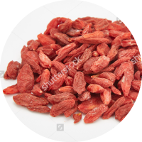
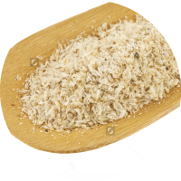
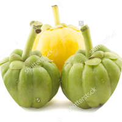
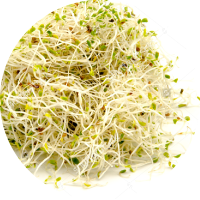

我是哪一型?
根據測驗結果您屬於
脂肪型肥胖
身型偏向西洋梨型，下盤（大腿、屁股）的份量遠大於上半身（腰、腹部），屬於皮下脂肪型。

肥胖的原因
成因多為外食，所以飲食較油膩；較愛吃肉，烤肉、炸雞排，或是美式漢堡薯條，都很容易吃進過多的油脂。有時也因應酬較多，大餐機會不斷，難避開過多的油脂攝取。
飲食策略
因皮下脂肪是代謝最慢、最難減下來的，所以針對這類型的朋友，建議：

枸杞

洋車前子

藤黃果

苜蓿芽
- 戒油炸，減少油脂攝入。
- 適量增加一點澱粉。
- 飯前食用可可亞萃取物、洋車前子、綠咖啡豆萃取物，或喝點茶水，立刻增加飽足感，減少食量，並減少脂肪生成與堆積。
- 飯後喝點茶，或是攝取高濃度的茶葉萃取物，可解油膩、強化脂肪代謝力。
- 平時應多喝水幫助代謝，輔助代謝的茶飲更好，如菊花茯苓茶。
枸杞
洋車前子
藤黃果
苜蓿芽
運動策略
要對付頑固的皮下脂肪，當然少不了運動。 改善腿臀的礙眼堆積，需要從改變生活中一些小習慣開始。
- 基礎型運動： 每天30分鐘的快走能全面且溫和地開始提升身體活動量，增加基礎代謝率。
- 整體性運動： 做有氧運動的間隔性訓練，如2分鐘衝刺跳躍後，踏步2分鐘，交替重複，能幫助消耗熱量。
- 局部塑型運動：
臀大肌幾乎占了臀部的全部，一鬆弛就會導致臀部鬆垮。要消除大腿屁股的贅肉，可從各種「提臀」的肌力訓練開始。
- 大步走路：穿著運動鞋，將重心放在腳跟，著地的瞬間，同側的臀部肌肉〈臀大肌〉也會變硬，這就是肌肉在收縮的證據。步伐越大、越快，臀大肌收縮的力道也必須更強，提升鍛鍊的效果。步行的距離越長，就越能提升提臀的效果。
- 騎自行車
-
貓式抬腿運動
- 手肘與膝蓋著地，擺出貓咪般的姿勢。
- 將上半身稍微壓低，使頭的位置較臀部略低。
- 將右腿往後上方伸直，使整條腿變成斜線。
- 右腳腳踝稍微用力，讓大腿到腳尖都保持一直線。
- 保持這樣的動作並同時閉氣5秒，接著回到預備姿勢。
- 重複7次後，換邊進行同樣的動作。
- 簡易提臀運動